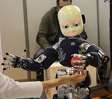

Changes brought by AI
Changes brought by AI
History Of Robots

The history of robots has its origins in the ancient world. During the industrial revolution, humans developed the structural engineering capability to control electricity so that machines could be powered with small motors. In the early 20th century, the notion of a humanoid machine was developed.

The first uses of modern robots were in factories as industrial robots. These industrial robots were fixed machines capable of manufacturing tasks which allowed production with less human work. Digitally programmed industrial robots with artificial intelligence have been built since the 2000s.
Old Legends
 Concepts of artificial servants and companions date at least as far back as the ancient legends of Cadmus, who is said to have sown dragon teeth that turned into soldiers and Pygmalion whose statue of Galatea came to life. Many ancient mythologies included artificial people, such as the talking mechanical handmaidens (Ancient Greek: Κουραι Χρυσεαι (Kourai Khryseai); "Golden Maidens"[1]) built by the Greek god Hephaestus (Vulcan to the Romans) out of gold.
Concepts of artificial servants and companions date at least as far back as the ancient legends of Cadmus, who is said to have sown dragon teeth that turned into soldiers and Pygmalion whose statue of Galatea came to life. Many ancient mythologies included artificial people, such as the talking mechanical handmaidens (Ancient Greek: Κουραι Χρυσεαι (Kourai Khryseai); "Golden Maidens"[1]) built by the Greek god Hephaestus (Vulcan to the Romans) out of gold.
The Buddhist scholar Daoxuan (596-667 AD) described humanoid automata crafted from metals that recite sacred texts in a cloister which housed a fabulous clock. The "precious metal-people" weeped when Buddha Shakyamuni died.[3] Humanoid automations also feature in the Epic of King Gesar, a Central Asian cultural hero.
Early Chinese lore on the legendary carpenter Lu Ban and the philosopher Mozi described mechanical imitations of animals and demons.[5] The implications of humanoid automatons were discussed in Liezi (4th century CE), a compilation of Daoist texts which went on to become a classic. In chapter 5 King Mu of Zhou is on tour of the West and upon asking the craftsman Master Yan Shi "What can you do?" the royal court is presented with an artificial man. The automation was indistinguishable from a human and performed various tricks for the king and his entourage. But the king flew into a rage when apparently the automation started to flirt with the ladies in attendance and threatened the automation with execution. So the craftsman cut the automation open and revealed the inner workings of the artificial man. The king is fascinated and experiments with the functional interdependence of the automation by removing different organlike components.
The king marveled "is it then possible for human skill to achieve as much as the Creator?" and confiscated the automation.[6] A similar tale can be found in the near contemporary Indian Buddhist Jataka tales, but here the intricacy of the automation does not match that of Master Yan.[4] Prior to the introduction of Buddhism in the Common Era, Chinese philosophers did not seriously consider the distinction between appearance and reality. The Liezi rebuts Buddhist philosophies and likens human creative powers to that of the Creator.
.jpg)